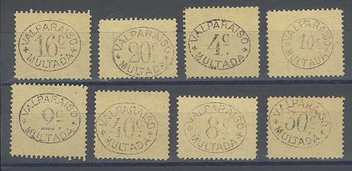
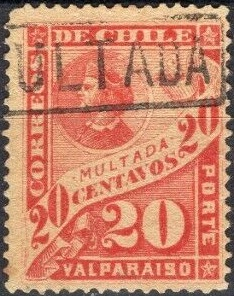
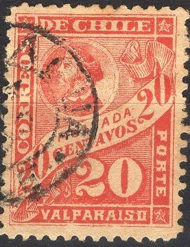
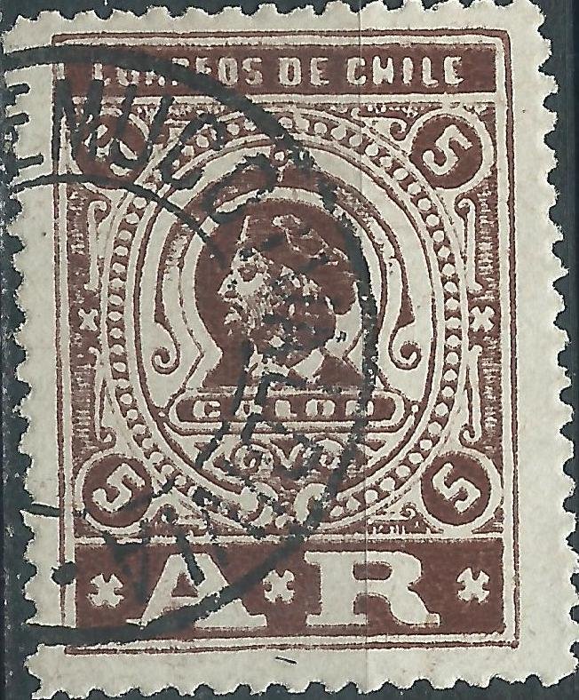
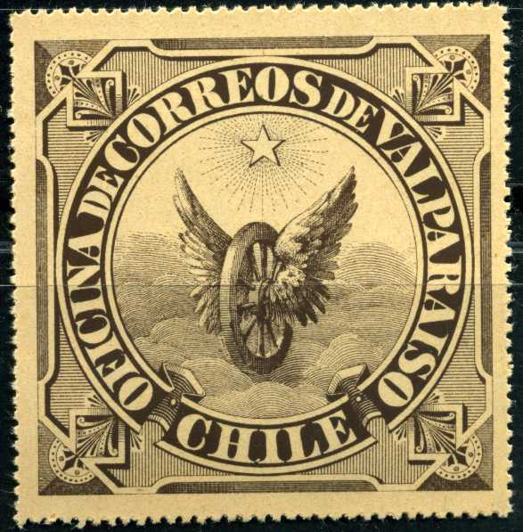
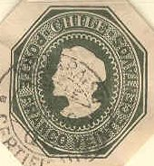

Note: on my website many of the
pictures can not be seen! They are of course present in the
catalogue;
contact me if you want to purchase it.
2 c black 4 c black 6 c black 8 c black 10 c black (circle) 16 c black 20 c black 30 c black 40 c black
These stamps were printed on yellowish paper, they have perforation 13.
Value of the stamps |
|||
vc = very common c = common * = not so common ** = uncommon |
*** = very uncommon R = rare RR = very rare RRR = extremely rare |
||
| Value | Unused | Used | Remarks |
| 2 c to 30 c | ** | ** | |
| 40 c | *** | *** | |
Forgeries of these stamps were made by Fournier:

Fournier forgeries, taken from a 'Fournier Album of Philatelic
Forgeries'
Fournier cancels, reduced sizes; The cancels "SANTIAGO 31 1
95 CHILE" and "MULTADA" in a box are know to have
been used on these forgeries by Fournier.


1 c red on yellow 2 c red on yellow 4 c red on yellow 8 c red on yellow 10 c red on yellow 20 c red on yellow 40 c red on yellow 50 c red on yellow 60 c red on yellow 80 c red on yellow 1 P red on yellow 100 c red on yellow
Several values were printed on one sheet side by side. For the specialist: these stamps have been issued with perforation 11 1/2 in 1895 (1 c to 1 P) and re-issued with perforation 13 1/2 in 1896 (1 c to 100 c), thus the 1 P only exists with perforation 11 1/2 and the 100 c only with perforation 13 1/2. The colours of the 1896 issue are slightly different (the colour of the paper as well).
Value of the stamps |
|||
vc = very common c = common * = not so common ** = uncommon |
*** = very uncommon R = rare RR = very rare RRR = extremely rare |
||
| Value | Unused | Used | Remarks |
| 1 c | * | * | Cheapest type |
| 2 c | * | * | Cheapest type |
| 4 c | c | c | Cheapest type |
| 6 c | * | * | Cheapest type |
| 8 c | * | * | Cheapest type |
| 10 c | c | c | Cheapest type |
| 20 c | * | * | Cheapest type |
| 40 c | * | * | Cheapest type |
| 50 c | ** | * | Cheapest type |
| 60 c | ** | ** | Cheapest type |
| 80 c | *** | ** | Cheapest type |
| 1 P | *** | *** | |
| 100 c | R | R | |
The next 1 c stamp, I've been told, is a Le Blanc overprint; it has a '10 c' in a circle surcharge. I have no further information:

Le Blanc overprint?
I've been told that the following stamps are Fournier forgeries, they have the "O" of "VALPARAISO" more squarish than in the genuine stamps:


(Fournier forgeries, reduced sizes)
I have seen them with the following cancels only: "MULTADA" in a rectangular box, and the following circular postmarks: "SANTIAGO CHILE 31 1 95", "SANTIAGO CHILE 31 I 95", "LINARES CHILE 30 NOV 95", "VALDIVIA 1 FEB 97 CHILE", "PISABUA 1 DIC 97 CHILE" and "TALCA CHILE 5 ABR 95". Other Fournier cancels exist (see pictures below), however, I do not know if they were used on the above forgeries.
(Fournier cancels, reduced sizes)
Fournier offers two series of these stamps, as second choice forgeries in his 1914 pricelist. The first serie is the values 20 c to 1 P with perforation 11 1/2 (6 values); he offers them for 1 Swiss Franc in his pricelist. The second serie (also second choice forgeries), the values 20 c to 100 c (6 values) with perforation 13 1/2.
I copied the following text about these Fournier / Mercier / Oneglia(?) forgeries from Chile Filatelico Ano XX, No 76, Santiago June 1947, page 60-63 (original text in Spanish in red and Google translated in black color, there are also some black and white images of sheets of these forgeries, in my view these are the same as the ones shown in the Fournier Album):
LA FALSIFICACION DE LOS SELLOS DE MULTAS DE CHILE DE LOS AÑOS 1895 Y 1897
Por L. A. Holley.
Nuestro amigo y colaborador, el Dr. Juan Salinas
de Lozada, ha tenido la gentileza de obsequiarnos con dos
fotografías de las planchas de los sellos falsos de multas de
Chile, que nos anima a decir algo sobre el particular para la
nueva generación, aún cuando en los Anales de la S. F. de Ch.,
trató el tema el incansable investigador M. de Lara (Ramón
Laval), por allá en el año 1899 y del cual muy poco más
tenemos que agregar.
En aquel tiempo solo se conocían como falsos los valores 80 y
100 centavos y el de 1 peso y, aquí, en estas fotografías,
vienen los de 20, 40, 50, 80 y 100 centavos y 1 peso, impresos
por el mismo falsificador; cosa que nos revela la importancia del
tema.
La historia de estas falsedades es muy sencilla. Un buen día del
año1899, la Dirección General de Correos recibió una carta del
señor Hugo Krotzsch de Alemania, en que denunciaba la
falsificación de estos valores y acompañaba varios ejemplares.
La noticia pasó a la S. F. de Ch., donde se pudo constatar el
hecho y tomar razón del falsificador, que no era otro sino el
conocido embaucador de Ginebra, Louihenri Mercier, que las
repartía por todo el mundo a precios bajísimos y como simples
imitaciones, como decía.
Pero las tales imitaciones eran peligrosísimas, yu que estaban
hechas en un papel casi idéntico al de las legítimas y con
tintes muy parecidos; lo que dió motivo a estudios muy serios
sobre el particular para prevenir a loscoleccionistas de tamaño
engaño.
Es del conocimiento de todos, que de estas estampillas hubo dos
emisiones: la del año 1895, de color rojo sobre papel amarillo
subido y perforadas 11 1/4, y la de 1897, de color carmín sobre
papel amárillo claro, paja, y perforada 13 1/4. Para que pueda
apreciarse el valor que han adquirido estas estampillas por su
escasés, es interesante dar a conocer las cantidades emitidas de
cada emisión
Translation:
Our friend and collaborator, Dr. Juan Salinas de Lozada, has been
kind enough to present us with two photographs of the plates of
the forged Chilean postage due stamps, which encourages us to say
something about the matter for the new generation, even when In
the Anales de la SF de Ch., the tireless researcher M. de Lara
(Ramón Laval) dealt with the subject, back in 1899 and to which
we have very little to add.
At that time, only the values 80 and 100 centavos and 1 peso were
known as forgery and, here, in these photographs, are those of
20, 40, 50, 80 and 100 centavos and 1 peso, printed by the same
forger ; which reveals the importance of the subject.
The history of these forgeries is very simple. One fine day in
1899, the General Post Office received a letter from Mr. Hugo
Krotzsch of Germany, in which he denounced the forgeries of these
values accompanied by several copies. The news went to the S. F.
de Ch., Where the fact could be verified and the forger was
revealed, who was none other than the well-known Geneva trickster
Louihenri Mercier, who distributed them all over the world at
rock-bottom prices and as mere knockoffs, as he put it.
But such imitations were extremely dangerous, and they were made
on a paper almost identical to that of the legitimate ones and
with very similar dyes; which gave reason to very serious studies
on the subject to prevent collectors from being deceaved.
It is known to all that there were two issues of these stamps:
the one from 1895, red on yellow paper and perforated 11 1/4, and
the one from 1897, carmine color on light yellow paper, straw,
and perforated 13 1/4. In order that the value that these stamps
have acquired due to their scarcity can be appreciated, it is
interesting to disclose the amounts issued for each issue.
| Emision de 1895 | Emision de 1897 | ||
| 1 cts | 30,000 | 1 cts | 30,000 |
| 2 cts | 20,000 | 2 cts | 60,000 |
| 4 cts | 20,000 | 4 cts | 60,000 |
| 6 cts | 20,000 | 6 cts | 30,000 |
| 8 cts | 20,000 | 8 cts | 30,000 |
| 10 cts | 40,000 | 10 cts | 60,000 |
| 20 cts | 20,000 | 20 cts | 25,000 |
| 40 cts | 10,000 | 40 cts | 1,000 |
| 50 cts | 6,000 | 50 cts | 1,000 |
| 60 cts | 6,000 | 60 cts | 1,000 |
| 80 cts | 4,000 | 80 cts | 1,000 |
| 1 peso | 4,000 | 100 cts | 1,000 |
Estas estampillas se
imprimieron en varias tiradas, cuyos pliegos contenían, los
primeros, todos los valores de la seríe, y los últimos,
aquellos de mayor demanda. Naturalmente, el falsificador eligió
para su trabajo aquellos valores de más alto precio, por su
reducida cantidad; pero, como todos los que se dedican a estas
malas artes caen en el garlito por alguna falla que,
irremediablemente, les ocurre al paso, vamos, pues, a desmenuzar
su obra y sacar a luz los defectos de aquella brillante
impresión.
Desde Iuego, y esta es de lo más importante, si medimos las
perforaciones, encontramos.que las falsas marcan 11 1/2 para
ambas emisiones; muy distante, como se vé, de las verdaderas que
hemos apuntado: de 11 ¼ y 13 1/4, respectivamente. Aquí debemos
dejar constancia que los catálog os universales no se han
ajustado a la verdadera medida al mencionarlas, p ues
Yvert les dá 11 ½ a la primera y 13 1/2 a la segunda; Scott 11
y 13 1/2, respectivamente, y Gibbons, esta misma medida; cosa que
no es exacta, sobre todo cuando existen falsificaciones y que
distrae en conjeturas al coleccionista.
Mercier hizo sus impresiones Iitográ ficamente, como las au
téiticas, pero para ello tuvo que hacer un traspaso fotográfico
a la piedra , de lo que le resultaron un tanto borronientas y
deslucidas. En el diseño las diferencias no so grandes,
resaltando la "C" de Chile, de mayor tamaño, y la
punta del bigote de Colón demasiado marcada. El color del
diseño no es vivo, como en los originales, sino un tanto
apagado, y e l papel tira a color am a l'illo de azufre, subido,
presentando un t inte verdoso al lado de los originales de la
primera emisión. En cambio, las falsas de la segunda emisión ,
se han impreso sobre papel a marillo claro, pero un poco menos
vivo que el auténtico.
Para darles un carácter de mayor autenticidad, Mercier
falsificó a suvez los timbres de multas con que inutilizarlas y
darlas al mercado con certificado de mayor legitimidad. Es el
conocido matasellos apaisado, de esquinas redondeadas, con la
inscripción MULTADA, que os tentan estas estampillas. Las letras
del original son de 5 1/4 mm. de alto y los falsos tienen la
misma medida, pero la palabra mide 31 1/2 mm. en los verdaderos y
en los falsos solo alcanza a 24 mm.; por consiguiente existe una
diferencia de 7 1/2 mm. en el largo de las falsas, porque las
letras son en estos más angostas.
Ahora, el rectángulo que encierra la palabra MULTADA, mide en el
original 10 mm. de alto por 38 mm. de largo, en cambio el falso
solo alcanza a 8 1/2 mm. de alto por 29 mm. de largo, resultañdo
mucho más pequeño el matasellos falso que el legítimo.
Translation: These stamps were printed in several
runs, the sheets of which contained, at first, all the values of
the series, and later, those of greatest demand. Naturally, the
forger chose for his work those values of the highest price,
because of their small quantity; But, as all those who dedicate
themselves to these bad arts fall for some fault that inevitably
happens to them along the way, we are going, then, to shred his
work and bring to light the defects of that brilliant impression.
Since then, and this is the most important, if we measure the
perforations, we find that the false ones are 11 1/2 for both
emissions; very distant, as you can see, from the true ones that
we have pointed out: 11 ¼ and 13 1/4, respectively. Here we must
state that the universal catalogs have not been adjusted to the
true measure when mentioning them, because Yvert gives 11 ½ for
the first and 13 1/2 for the second; Scott 11 and 13 1/2,
respectively, and Gibbons, this same measure; something that is
not exact, especially when there are forgeries and that distracts
the collector in conjecture.
Mercier made his prints lithographically, like the authentic
ones, but for this he had to make a photographic transfer to
stone, which he found a bit blurry and lackluster. In the design,
the differences were not great, highlighting the larger
"C" for Chile and the tip of Colón's mustache that was
too marked. The color of the design is not vivid, as in the
originals, but rather muted, and the paper is a sulfur yellow
color, raised, presenting a greenish tint next to the originals
from the first issue. On the other hand, the forgeries of the
second issue have been printed on light yellow paper, but a
little less lively than the authentic one.
To give them a more authentic character, Mercier in turn forged
the cancels with which to obliterate them and give them to the
market with a certificate of greater legitimacy. It is the
well-known landscape postmark, with rounded corners, with the
inscription MULTADA, which these stamps bear. The letters of the
original are 5 1/4 mm. high and the false ones have the same
measurement, but the word measures 31 1/2 mm. in the true ones
and in the false ones it only reaches 24 mm; therefore there is a
difference of 7 1/2 mm. in the length of the false ones, because
the letters are narrower in these.
Now, the rectangle that encloses the word MULTADA, measures in
the original 10 mm. high by 38 mm. long, while the false only
reaches 8 1/2 mm. high by 29 mm. long, the false postmark is much
smaller than the legitimate one.
Observemos luego el dibujo
de estas estampillas, que aquel comerciante falsificó y que
llamaba facsímiles. Estudiando todas las piezas, encontramos
fallas comunes a la generalidad de los valores, desde el 20
centavos al peso y 100 centavos. Primero: el círculo que
encierra el busto, de Colón se esfuma casi completamente hacia
el ángulo superior izquierdo en las legítimas, en las falsas
este círculo es completamente perceptible en toda su amplitud y
bien marcado. El bonete de Colón topa este círculo en las
falsas, mientras que en las legítimas queda distanciado de él.
Las cifras en la bandeleta central, especialmente los ceros,
tocan o casi tocan el margen superior de esta, en cambio en las
legítimas se encuentran bien en claro y centradas en dicha
bandeleta. La sombra debajo de la bandeleta es bastante
pronunciada en las falsas, en las legítimas tenue y menos ancha.
En la palabra
CORREOS las letras son un tanto más gruesas en las legítimas,
en las falsas aparecen más delgadas especialmente la
"S". Las palabras VALPARAISO y PORTE son con letras
netas en blanco, en las falsas aparecen con pelos de tinta, más
perceptibies en unas letras que en otras, como en las áes y en
la "0" de Porte, también la "0" de
Valparaíso semeja ser .más cuadrada.
Translation: Let us then observe the drawing of
these stamps, which that merchant forged and called facsimiles.
Studying all the pieces, we find common failures to the
generality of the values, from 20 cents to the peso and 100
cents. First: the circle that encloses the bust, of Columbus,
disappears almost completely towards the upper left corner in the
legitimate ones, in the false ones this circle is completely
perceptible in all its width and well marked. Columbus's bonnet
meets this circle in the false ones, while in the legitimate ones
it is distanced from it. The figures in the central flag,
especially the zeros, touch or almost touch the upper margin of
this, while in the legitimate ones they are well clear and
centered on said flag. The shadow under the bandeleta is quite
pronounced in the false ones, in the legitimate ones dim and less
wide. In the word
CORREOS the letters are somewhat thicker in the legitimate ones,
in the false ones they appear thinner, especially the
"S". The words VALPARAISO and PORTE are with net
letters in white, in the false they appear with hairs of ink,
more perceptible in some letters than in others, as in the áes
and in the "0" of Porte, also the "0" of
Valparaíso seems to be more square.
Separadamente, cada valor
falso tiene su distinción absoluta. La cifra grande deI
"2" del 20 centavos, tiene un ornamento en su base
izquierda que forma un círculo neto en blanco, dentro del cual
se enrrolla la sombra de la base del número; en los falsos no
existe este círculo y simplemente penetra en esa parte del sello
un tizne de la sombra en forma de coma.
En el 40 centavos, el palo trasversal de la cifra "4",
grande, es parejo en grosor en la falsa, mientras que en la
legítima es mucho más fuerte que el diaginal, que lo forma.
Esta cifra no toca la sombra debajo de la bandeleta, se encuentra
muy dista nte de ella, en las falsas llega hasta ahí mismo.
El 50 centavos tiene unida la coleta superior con el cuerpo infe
rior de la cifra "5" por medio de una raya oblicua, a
más el número termina en un grueso círculo en blanco cortado
por la sombra, que lo deja en punta aguda. En el falso la raya es
vertical y la terminación de la cifra es en un circulito
insignificante comparado con el anterior, que no dá lugar a esa
punta aguda.
El 60 centavos es el más parecido, sin embargo, ia vuelta
superior de la cifra "6", grande, difiere de la
legítima, en que es menos grueso el crespo superior.
El 80 centavos tiene las cifras grandes del fondo un tanto más
separadas y sus contornos no son de tanto cuerpo corno en las
legítimas; la cifra "0" es de ojo más dilatado.
En la de 1 Peso, las letras de esta palabra son más grandes y
más gruesas en el falso que en los origina les y la gran cifra
"1" bajo la bandeleta, tiene la cabeza casi terminada
en punta en el falso, mientras que en el legítirno tiene un
chaflán en el extremo superior derecho, que forma un ángulo
obtuso.
En el 100 centavos, se notan también diferencias esenciales en
las cifras grandes del fondo. Son de mucho menos grueso que las
legítimas; la cabeza del número "1" no termina en
punta achaflanada aguda sino en un simple p equeño saliente y
las cifras mismas se encuentran más separadas en las falsa. Es
de advertir, que Mercier imprimió este sello en los colores de
ambas emisiones, rojo y carmón; cuando el original solo fué
hecho en carmín.
Aquí termina la historia de estas falsificaciones, que
felizmente se ven poco en el comercio de hoy día. Reproducimos
las planchas fotográficas que nos ha donado el Dr. Salinas de
Lozada, como una primicia para Chile; pues nunca antes se
publicaron en la prensa filatélica de la nación.
 
Genuine 20 c stamp left, forgery right with "VALDIVIA
1 FEB 97 CHILE" forged cancel

Genuine 40 c left, forged 40 c right with forged
"MULTADA" cancel.

Genuine 50 c on the left, forged 50 c on the right with forged
"CONCEPCION 20 DIC 97 CHILE" cancel
Translation:
Separately, each forged value has its absolute distinction. The
large figure of the "2" of the 20 cents has an ornament
at its left base that forms a net white circle, within which the
shadow of the base of the number is rolled; in the false ones,
this circle does not exist and a smudge from the shadow in the
shape of a comma simply penetrates that part of the stamp.
In the 40 centavos, the transverse bar of the large figure
"4" is even in thickness in the forgery, while in the
legitimate one it is much stronger than the diaginal one, which
forms it. This figure does not touch the shadow under the flag,
it is very far from it, in the forgery it reaches right there.
The 50 cents has the upper ponytail attached to the lower body of
the figure "5" by means of an oblique stripe,
furthermore the number ends in a thick white circle cut by the
shadow, which leaves it in a sharp point. In the forged one, the
line is vertical and the termination of the figure is in an
insignificant circle compared to the previous one, which does not
give rise to that sharp point.
The 60 cents is the closest, however, the upper round of the
large figure "6" differs from the legitimate one, in
that the upper curl is less thick.

Genuine 60 c on the left, forged 60 c on the right with forged
"VALDIVIA 1 FEB 97 CHILE" cancel

Genuine 80 c on the left, forged 80 c on the right with forged
"MULTADA" cancel

Genuine 1 Pon the left, forged 1 P on the right with forged
"SANTIAGO CHILE 31 1 95" cancel

Genuine 100 c on the left, forged 100 c on the right with forged
"CONCEPCION 20 DIC 97 CHILE" cancel
Translation: The 80 cents has the large figures in the back a
little further apart and its outlines are not as large as in the
legitimate ones; the number "0" is for the most dilated
eye.
In the 1 Peso, the letters of this word are bigger and thicker in
the forgery than in the originals and the large figure
"1" under the flag, has the head almost ending in a
point in the forgery, while in the legitimate one it has a
chamfer in the upper right corner, which forms an obtuse angle.
In the 100 cents, there are also essential differences in the
large numbers of the background. They are much less thick than
the legitimate ones; the head of the number "1" does
not end in a sharp chamfered point but in a simple small
protrusion and the figures themselves are further apart in the
forged ones. It should be noted that Mercier printed this stamp
in the colors of both issues, red and carmine; when the original
was only done in carmine.
Here ends the story of these counterfeits, which are fortunately
little seen in today's commerce. We reproduce the photographic
plates donated by Dr. Salinas de Lozada, as a first for Chile;
for they have never before been published in the nation's
philatelic press.

1 c red 2 c red 4 c red 10 c red 20 c red
I've been told that the values 6 c and 8 c exist, but were not issued (c).
Value of the stamps |
|||
vc = very common c = common * = not so common ** = uncommon |
*** = very uncommon R = rare RR = very rare RRR = extremely rare |
||
| Value | Unused | Used | Remarks |
| 1 c | c | c | |
| 2 c | c | c | |
| 4 c | c | c | |
| 10 c | vc | vc | |
| 20 c | c | * | |
From 1899 to 1924 postage due stamps were no longer issued. In 1924 they were re-introduced. A new serie was issued (illegally?) in 1924 with inscription "CORREOS CHILE MULTA" with a number in the center (8 values).
In 1907 official stamps for the navy-ministry were issued. They bear the inscription "CORRESPONDENCIA OFICIAL CHILE MINISTERIO DE MARINA". Several overprints also exist.

(I've been told that this is a forgery of such a stamp)
In 1908 several postage stamps were overprinted with an anchor and inscription "OFICIAL". These overprints are merely security overprints of the army-ministry.

(1 P with red "OFICIAL" and anchor overprint, could be
a forgery)
5 c brown
Value of the stamps |
|||
vc = very common c = common * = not so common ** = uncommon |
*** = very uncommon R = rare RR = very rare RRR = extremely rare |
||
| Value | Unused | Used | Remarks |
| 5 c | ** | ** | |
This stamp exists imperforate. I've also seen partly perforated stamps.
Forgeries also exist, example:

Rather badly printed forgeries

5 c black
Value of the stamps |
|||
vc = very common c = common * = not so common ** = uncommon |
*** = very uncommon R = rare RR = very rare RRR = extremely rare |
||
| Value | Unused | Used | Remarks |
| 5 c | *** | ? | |
Forgeries exist, example:

(Forgery!)
From 1886 onwards returned letter stamps were issued, they have the inscription "CIERRO OFICIAL".
red (orange)
Three slightly different types exist, differing in the ornament just above the star. This type was re-issued in 1924 in the colours red, orange and blue.
black
brown
Three types exist, differing in the shape of the head of Columbus.
green on green blue on green brown black on orange
orange

black on brown

red blue

red blue

blue


2 c brown 10 c olive 20 c blue 1 P brown 5 P red 10 p green
The values 2 c, 10 c, 20 c and 1 P seem to have been used postally in 1891.
(Sorry, no picture available yet)
2 c brown 5 c red 10 c green 20 c blue 1 P brown
There are two types of the 2 c, 5 c and 10 c; the horse has a tail in the first type and in the second type it doesn't.

5 c red 10 c green 20 c blue (2 types)
Other telegraph stamps were issued in 1927 and onwards.

What are these? "CORREOS DE CHILE"
The inscription of the above labels(?) reads:
'Esta pieza ne debe ser entregada al destinatario, si no
lleva adheridas e inutilizdas con la palabra "multada"
estampillas por valor de'

(Reduced size)
1 c red 2 c brown 5 c blue 10 c green 20 c orange 1 P orange
It seems that in 1880-81, 1891 and 1913 these fiscal stamps were used for postal purposes.
Consular stamps, I've also seen the values 5 c red, 2 P brown and
black, 5 P blue and black, 5 P green and black, 10 P orange and
black.

{kind=link}
{kind=link}
{kind=link}